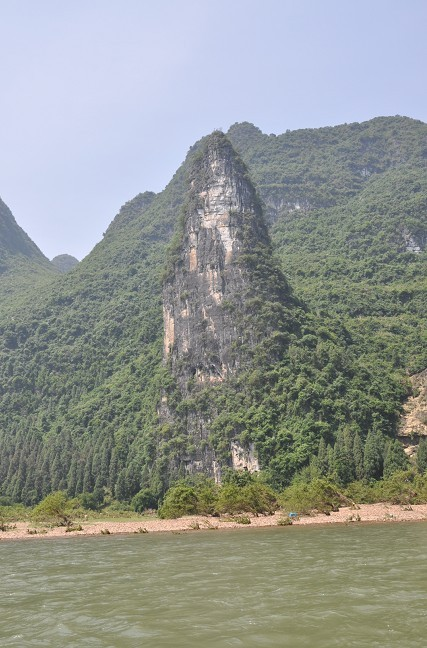
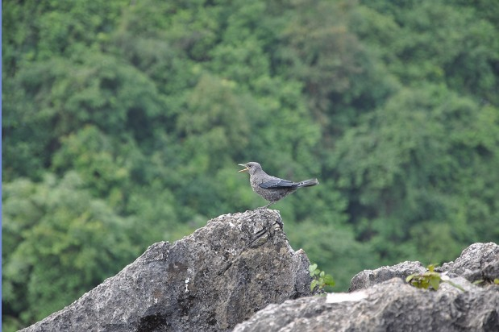
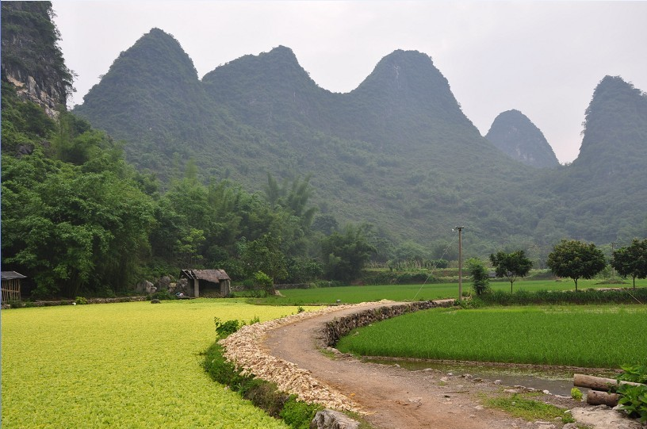

发信人: yahuo (牙火虫), 信区: outdoor
标 题: 行走，注定要成为我生活的一种方式之广西1
发信站: 饮水思源 (2010年05月31日01:15:27 星期一)
经常，突然哪天想起要出门，心潮澎湃，一刻也闲不住。然后，必然是没有准备的，必然
是没有目的地和方向的，必然是兴奋莫名的，不出去就有被窒息的感觉。不顾一切，出走
！
有时，我会上酷讯漫无目的地闲逛，看机票，发现哪儿便宜，正好感兴趣，买一张。背上
背囊，出发！
我讨厌计划，讨厌规划，讨厌攻略。喜欢随时可以改变，随处有惊喜的旅程，喜欢这种无
拘无束一个人行走的方式。
然而，我没有方向感，在熟悉的城市，也会经常迷路。前几天居然在离家一公里左右的地
方迷路，转来转去找不到回家的方向。那可是我住了五年半的街道啊。
然而，迷路归迷路，我依然喜欢旅行，依然不喜欢结伴。因为没有目的地，也就无所谓方
向，无所谓迷路。家在背上，路在脚下。走到哪算哪，哈尔有他的移动城堡，我有我流动
的家园。
行走，注定要成为我生活的一种方式。
screen.width - 200){this.width = screen.width - 200}">
screen.width - 200){this.width = screen.width - 200}">
漓江
screen.width - 200){this.width = screen.width - 200}">
漓江
screen.width - 200){this.width = screen.width - 200}">
漓江
screen.width - 200){this.width = screen.width - 200}">
还是漓江
screen.width - 200){this.width = screen.width - 200}">
依然漓江
screen.width - 200){this.width = screen.width - 200}">
鲤鱼？
 screen.width - 200){this.width = screen.width - 200}">
神笔峰
screen.width - 200){this.width = screen.width - 200}">
九马画山，反正我是数不出来
screen.width - 200){this.width = screen.width - 200}">
二十元人民币的背景图
screen.width - 200){this.width = screen.width - 200}">
兴坪古镇的山巅
screen.width - 200){this.width = screen.width - 200}">
兴坪老房子
 screen.width - 200){this.width = screen.width - 200}">
绝壁上的小鸟
screen.width - 200){this.width = screen.width - 200}">
嘿嘿
screen.width - 200){this.width = screen.width - 200}">
阳朔西街

西街
screen.width - 200){this.width = screen.width - 200}">
据说：外看似象里像马？
screen.width - 200){this.width = screen.width - 200}">
阳朔
screen.width - 200){this.width = screen.width - 200}">
阳朔
screen.width - 200){this.width = screen.width - 200}">
学裘千仞
screen.width - 200){this.width = screen.width - 200}">
不谙水性的俺猪草，差点掉下去，一命呜呼了，好玩吧？
screen.width - 200){this.width = screen.width - 200}">
遇龙河

阳朔的遇龙河
screen.width - 200){this.width = screen.width - 200}">
阳朔的遇龙河

阳朔
 screen.width - 200){this.width = screen.width - 200}">
池塘里不知是啥
screen.width - 200){this.width = screen.width - 200}">
帅哥
screen.width - 200){this.width = screen.width - 200}">
插秧

阳朔道路
screen.width - 200){this.width = screen.width - 200}">
遇龙村
screen.width - 200){this.width = screen.width - 200}">
遇龙村
screen.width - 200){this.width = screen.width - 200}">
相对无言：一个瞌睡，一个长眠！
screen.width - 200){this.width = screen.width - 200}">
遇龙桥
screen.width - 200){this.width = screen.width - 200}">
遇龙河自驾游

遇龙河尽头
screen.width - 200){this.width = screen.width - 200}">
我的墨镜葬送于此了
screen.width - 200){this.width = screen.width - 200}">
夕阳红
screen.width - 200){this.width = screen.width - 200}">
screen.width - 200){this.width = screen.width - 200}">
screen.width - 200){this.width = screen.width - 200}">
我看着那个男的在波光中走来，又看着他在夕阳里离去
有些人来了，又走了，他不过是生命里的一个过客。。。
女孩，在来不及挥别的暮色里，把两个人的背影 合成一个
黯然神伤，不敢抬头，怕见夕阳红。。。
screen.width - 200){this.width = screen.width - 200}">
是谁在波光倒影里 轻叹我前世的乡愁
（未完待续）
--
紫薇花开的季节，不去西藏，带上我的雪橇狗太郎，背包去流浪，那山、那人、那狗，醉倒在神话天堂
※ 修改内容:·yahuo 于 05月31日17:09:52 修改本文·[FROM: 124.226.112.145]
|